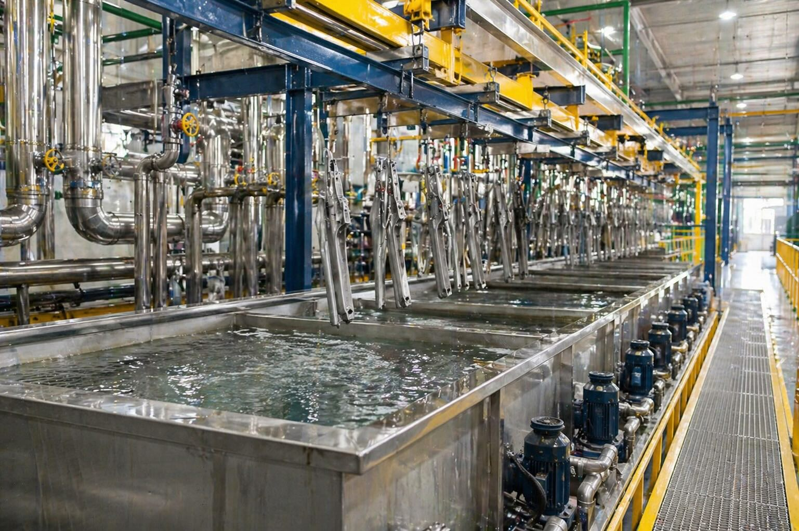
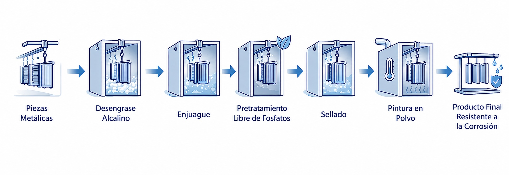
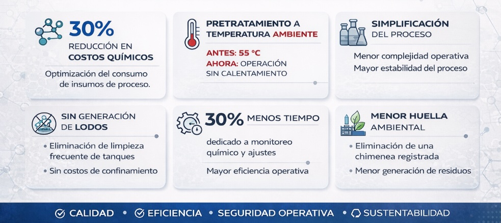

Un contexto industrial de alta exigencia
En la industria HVAC, la durabilidad de los componentes metálicos expuestos a ambientes agresivos es un factor determinante para garantizar confiabilidad en campo y minimizar reclamaciones por corrosión. En las líneas de fabricación de filtros, donde las piezas atraviesan ciclos térmicos, humedad, agentes químicos y vibración, la integridad del sistema de recubrimiento depende en gran medida del pretratamiento.
En este entorno, plantas en Monterrey enfrentan presiones constantes para elevar la calidad del acabado, reducir costos operativos y cumplir metas ambientales cada vez más estrictas.
Durante años, la línea utilizó un proceso basado en fosfato de zinc, un estándar tradicional en la industria del metalcoating por su reconocida resistencia a la corrosión. Sin embargo, su manejo implica una combinación compleja de temperatura elevada, formación de lodos y controles rigurosos, lo que incrementa el costo total de propiedad y el riesgo operativo. Ante esta realidad, el equipo de ingeniería buscó un sistema más moderno y sustentable capaz de mantener —o incluso mejorar— el desempeño del recubrimiento.
Descripción del problema y sus impactos en planta

El sistema con fosfato de zinc operaba a aproximadamente 55 °C, lo que implicaba un alto consumo energético en una línea con operación continua. Además, la naturaleza del proceso generaba lodos que requerían limpieza programada y disposición en confinamiento, introduciendo costos adicionales y tiempos improductivos.
Según personal de operaciones, el mantenimiento de los tanques era una de las actividades más demandantes y con mayor riesgo, ya que involucraba trabajos en espacios confinados y manipulaciones frecuentes de residuos.
Desde el punto de vista ambiental, el proceso mantenía activos registros asociados a fuentes fijas, incluyendo una chimenea dedicada al sistema. Paralelamente, el control químico implicaba múltiples variables, siete productos diferentes y un sistema de nueve etapas. En palabras del equipo de calidad, el pretratamiento “tomaba buena parte de la atención diaria”, y aun así era necesario realizar numerosas pruebas analíticas para mantener estabilidad.
Evaluación y selección de la solución
Con estos factores en mente, la planta inició una revisión exhaustiva de alternativas, privilegiando tecnologías más limpias, de baja conductividad, libres de fosfatos y con menor complejidad operacional.
El objetivo principal era asegurar que cualquiera de las alternativas garantizara la misma resistencia a la corrosión y adhesión del recubrimiento, tomando en cuenta que la pintura utilizada demandaba compatibilidad estricta en adhesión y robustez.
El proceso de selección incluyó pruebas de laboratorio seguidas de un piloto de 30 días en la línea real. Durante este periodo, se evaluó estabilidad química, calidad del recubrimiento, limpieza superficial, manejo operativo y confiabilidad del sistema.
Tras el periodo de prueba, el equipo de ingeniería concluyó que la propuesta de Ecolkem, centrada en un pretratamiento multimetal sin fosfatos y de operación a temperatura ambiente, cumplía con las especificaciones técnicas requeridas y simplificaba el proceso de forma significativa.
Implementación técnica del nuevo sistema
La solución implementada consistió en una secuencia basada en tres productos:
MET-121E como limpiador alcalino profundo.
Zirconyl-TA6500 como pretratamiento multimetal en base agua, libre de fosfatos.
ECOSEA-810E como sello no crómico.

Según el personal técnico involucrado, la capacidad de operar a temperatura ambiente fue un punto clave para asegurar la transición sin impactos energéticos negativos.
La migración redujo el sistema a 8 etapas en lugar de 9 como originalmente se tenía. También, se logró disminuir la cantidad de químicos utilizados pasando de siete productos a solo tres.
El cambio también implicó la reducción significativa de temperaturas en varias etapas, especialmente en la de pretratamiento, que disminuyó alrededor de 55 °C.
De acuerdo con el equipo de servicio técnico, la implementación se realizó sin contratiempos, en buena parte debido al acompañamiento cercano durante el arranque y estabilización química. La transición no requirió modificaciones mayores en infraestructura, lo que permitió mantener la producción sin paros prolongados.
Resultados y beneficios obtenidos

Los beneficios operativos se manifestaron desde los primeros días.
El consumo de gas descendió drásticamente al eliminar la necesidad de calentar el pretratamiento, lo que según el personal de mantenimiento representó uno de los alivios más significativos para la línea.
Asimismo, la eliminación de lodos trajo consigo la desaparición de los costos de confinamiento, reduciendo no solo gasto, sino también complejidad administrativa.
La operación diaria se volvió más simple. El equipo de ingeniería señaló que el nuevo sistema disminuyó la cantidad de variables críticas, lo que redujo a su vez el número de pruebas de campo requeridas.
Los operadores reportaron una liberación estimada de 30 % del tiempo que antes dedicaban al muestreo y ajuste del proceso.
En materia de seguridad, la ausencia de lodos eliminó la necesidad de lavado semanal de tanques de acondicionador y otros espacios relacionados con los residuos que generan los lodos del fosfato de zinc, mitigando riesgos asociados a espacios confinados y exposición química.
En el plano económico, los costos de químicos y materiales se redujeron en más de 30 %, mientras que se eliminaron gastos recurrentes de limpieza de serpentines y manejo de residuos peligrosos.
Desde la perspectiva ambiental, la planta eliminó una chimenea del registro de fuentes fijas, disminuyendo formalmente sus emisiones y fortaleciendo su compromiso con operación sustentable.
Implicaciones estratégicas y replicabilidad
Para la planta, la transición significó avances simultáneos en tres frentes críticos: calidad, costo y sustentabilidad.
La ingeniería del sitio enfatizó que mantener la resistencia a la corrosión y la adhesión del recubrimiento era indispensable, y que el nuevo sistema no solo preservó dicho desempeño, sino que permitió una operación más estable y menos propensa a variaciones.
La migración también demostró la viabilidad de reemplazar tecnologías tradicionales basadas en fosfatos en líneas con niveles de exigencia propios del sector HVAC.
En la práctica, el caso confirma que los sistemas de pretratamiento modernos pueden integrarse a procesos industriales consolidados sin deteriorar la calidad final del producto.
Cierre editorial: aprendizajes para la industria
El caso de una planta en Monterrey ilustra cómo la evolución tecnológica en pretratamientos puede generar beneficios de forma simultánea en eficiencia operativa, seguridad, economía y sustentabilidad ambiental, sin comprometer el rendimiento del recubrimiento.
La experiencia demuestra que los procesos históricamente considerados “inevitables” por su robustez anticorrosiva, como el fosfato de zinc, pueden reevaluarse bajo criterios contemporáneos de manufactura avanzada y mejora continua.
En un contexto en el que las plantas buscan reducir complejidad, operar con menos energía y disminuir huella ambiental, las soluciones libres de fosfatos se perfilan como alternativas altamente competitivas.
Para la industria de recubrimientos y manufactura metálica, este caso no solo documenta una transición exitosa, sino que aporta un marco concreto para pensar nuevas modernizaciones en las líneas de acabado.
¿Evaluando una transición similar?
Nuestro equipo puede acompañarle en la evaluación, pruebas de laboratorio y arranque de un pretratamiento libre de fosfatos a la medida de su línea.
Contactar a Ventas